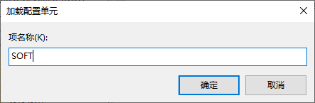

内存取证新选择：像访问文件一样进行内存取证—内存取证利器MemProcFs介绍¶
在过去的几年里，使用离地（living off the land）和无文件攻击技术的威胁者数量急剧增加。攻击者不再像以前那样关心如何消除他们的足迹，相反，他们尽量少留下足迹以避免被发现。这使得信息安全专业人员的工作更加困难，因为使用内置工具和磁盘上缺乏可扫描的恶意文件意味着一些传统的安全解决方案可能毫无用处。缺乏日志记录可能使我们很难在事后检查的过程中重建威胁者是如何滥用内置两用工具的，例如各种命令和脚本解释器，因此获取和分析内存可能在这种情况下发挥关键作用。
一般我们进行内存取证使用的工具是Rekall（http://www.rekall-forensic.com/）和Volatility（https://www.volatilityfoundation.org/），尤其是Volatility，由于具有大量的插件和广泛的社区支持，已经成为进行内存取证分析的首选工具。
但是Volatility主要是命令行工具，使用起来需要记住大量的命令，制作特定版本的操作系统Profile也比较繁琐。也有一些工具如Volatility Workbench（https://www.osforensics.com/tools/volatilityworkbench.html）提供了一个简陋的GUI界面，减少了取证人员操作的难度，但是遗憾的是只支持大部分的Volatility参数。
0x00. MemProcFs简介
今天我们介绍一个新的内存取证框架MemProcFS（https://github.com/ufrisk/MemProcFS），它提供了内存取证的一个新视角，即把内存各种Artifact以文件系统的形式展现出来，取证人员可以直接使用文本编辑器这样的工具直接打开分析结果进行提取和搜索，或者使用专用工具对一些Artifact（比如注册表文件）进行进一步分析。分析过程简单直接。
MemProcFS是Ulf Frisk（@UlfFrisk，https://twitter.com/UlfFrisk）开发的内存取证框架。“MemProcFS 是一种将物理内存视为虚拟文件系统中的文件的简便方法。简单的点击内存分析，无需复杂的命令行参数！通过安装的虚拟文件系统中的文件或通过功能丰富的应用程序库访问内存内容和工件以包含在您自己的项目中！”（https://github.com/ufrisk/MemProcFS/blob/master/README.md）。
0x01. 安装
MemProcFS的运行需要一些依赖的库。
首先是Python3.6以上版本。你可以从官方网页上获得合适的Python版本：https://www.python.org/downloads/windows/。或者你也可以像我一样使用Anaconda（https://www.anaconda.com/）带的Python，目前最新版本是Python 3.9。
然后需要安装LeechCore。这是一个Python的依赖库。使用pip工具安装该库如下图：
再次是安装下一步是安装Microsoft Visual C++ Redistributables for Visual Studio 2019。你可以从https://go.microsoft.com/fwlink/?LinkId=746572获得安装程序。这是一个标准的Windows安装程序，双击运行就可以了。
现在所有依赖的环境都可以了，下面可以下载MemProcFS了。请到MemProcFS的GitHub仓库，网址是https://github.com/ufrisk/MemProcFS/releases，搜索最新的版本，目前是5.2版本：
请下载如上图红框标注的版本，下载后解压缩，如图所示：
现在就可以使用这个框架了。
0x02. 示例
下面我们以一个例子演示一下MemProcFS框架的使用。
首先我们用WinPmem（https://github.com/Velocidex/WinPmem）工具对一台Windows 7计算机做一个内存镜像。使用命令：winpmem_mini_x64_rc2.exe memdump.dd，其中memdump.dd文件为生成的内存镜像文件：
运行完成后，可以看到生成了一个8G的内存镜像文件：
然后我们可以运行以下命令来使用MemProcFS分析刚刚制作的内存镜像，e:\Develop\memprocfs\MemProcFS.exe -device memdump.dd，如下图所示：
这里我们可以看到MemProcFS识别出来我们这个内存镜像的操作系统是: Windows 6.1.7601 (X64)，并且在创建了一个虚拟文件系统，并挂载到了系统的M:\盘。在不指定挂载点的时候，MemProcFS缺省挂载到M:\盘。如果M:\已经存在，则会报错，如下图：
指定其他挂载点，比如Q:\，可以使用选项-mount Q。如下图所示：
好了，现在我们把使用内存镜像制作的虚拟文件系统挂载到了M:\，我们可以打开资源管理器，直接访问M:\，如下图：
我们以内存里的注册表分析为例，来显示如何进行内存分析。
我们打开M:\registry\hive_files，可以看到在内存里提取到的注册配置单元都在该目录下：
我们可以直接使用注册表配置单元工具进行分析，比如使用内置注册表编辑器Regedit进行分析。
需要注意的是注册表编辑器需要将对应的配置单元文件（.reghive）复制到本地某个目录，比如我们复制到F:\Reghives目录下，如图：
我们运行Regedit.exe，如图：
我们选择“文件”菜单->”加载配置单元“，如图：
我们选择加载SOFTWARE配置单元，如下图：

加载完成如下图：
可以看到在HKU下挂载了一个名为SOFT的注册表键，可以像正常注册表那样访问里面的键和值。
我们也可以使用取证软件比如Registry Explorer（https://ericzimmerman.github.io/#!index.md）加载分析，如图：

当我们完成内存分析工作时，只要在运行MemProcFs的窗口按Ctrk+C即可退出。如图：
0x03. MemProcFS能做什么
现在，我们看一下MemProcFS能解析哪些数据：
1. 进程列表
进程列表有两个目录，一个是根目录下的name目录，里面是按进程名称列出的每个进程目录。如下图：
进程名字后面的数字是进程的pid。
另外一个目录是根目录下pid目录，里面是按进程 pid 列出的每个进程目录。如下图：
这些子目录里可以查看进程的相关信息，比如命令行：
2. 系统信息
系统信息在根目录下的sys目录，如图所示：
这里面的内容包括：
比如操作系统版本如下图：
3. 其他系统信息
Sys目录下还有一些子目录，代表不同的系统信息，比如证书、驱动、进程、网络、内核对象等，如下图：
比如我们可以看看users目录，下面是用户信息，如图：
4. 取证相关信息
取证相关信息在根目录forensic子目录。该目录包含与 MemProcFS 取证子系统相关的目录和文件。取证子系统是可以对内存转储进行的更全面的面向批处理的分析任务的集合。默认情况下，取证模式未启用。
可以通过命令行参数-forensic或编辑文件forensic_enable.txt来启用取证模式。命令行参数和文件都采用 1-4 之间的数字来启动取证模式。
取证模式可能需要一些时间来分析。它将一次性读取完整的内存转储并并行执行多个分析任务。结果将保存到 SQLITE 数据库中。根据选择启动的数字 1-4，完成后可以在 sqlite 浏览器中打开 sqlite 数据库。完成后，时间线和 NTFS MFT 分析等将作为forensic目录的子目录提供。
5. 其他杂项信息
杂项信息在根目录线下的misc目录，该目录包含代表与全局上下文相关的各种杂项分析任务的子目录。
其中包括：bitlocker相关信息、检测到恶意软件信息、内存地址和物理地址映射表、浏览器相关信息等。这个目录下也有一个全局进程列表文件，如下图：
6. 其他
在根目录下有一个conf目录，该文件包含与各个进程无关的全局内存进程文件系统状态和配置设置。
另外还有一个VM目录，默认情况下，vm目录是隐藏的。如果检测到支持的虚拟机，它将出现。必须通过命令行参数启用 VM 检测。
从上面的内容来看，MemProcFS提供了内存取证分析巨细靡遗的内容，可以使得我们可以细致分析目标系统内存的内容。
0x04. MemProcFS命令行选项
最后，MemProcFS提供了详细的选项，可以根据分析的要求采用不同的选项。具体命令行选项，可以参考https://github.com/ufrisk/MemProcFS/wiki/CommandLine
一般常见的命令行包括以下：
-
将内存转储文件挂载为默认 M:
memprocfs.exe -device c:\temp\win10x64-dump.raw -
将内存转储文件挂载为默认的 M:，但提供更冗余的信息：
memprocfs.exe -device c:\temp\win10x64-dump.raw -v -
将内存转储文件挂载为默认 M: 并启动取证模式：
memprocfs.exe -device c:\temp\win10x64-dump.raw -forensic 1 -
将内存转储文件挂载为 S:
memprocfs.exe -mount s -device c:\temp\win10x64-dump.raw -
使用 WinPMEM 驱动程序以只读模式挂载实时目标内存（实时内存取证分析）：
memprocfs.exe -device pmem -
使用相应的页面文件挂载内存转储：
-
memprocfs.exe -device unknown-x64-dump.raw -pagefile0 pagefile.sys -pagefile1 swapfile.sys
0x05. 结语
MemProcFS是一个强大的内存取证框架，更重要的是提供了取证分析人员和内存分析人员更为直观的访问接口，也不需要相关人员记住大量纷繁复杂的命令选项。现在就让我们试一下吧！